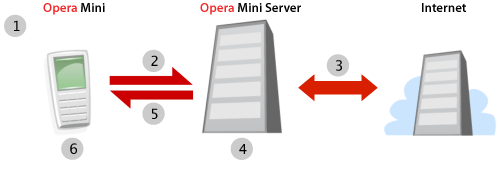
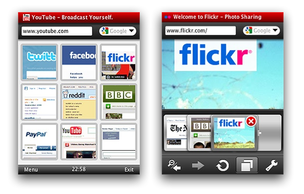
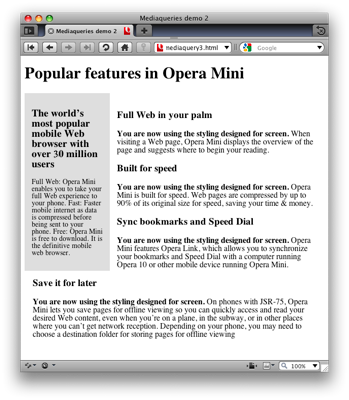

A developer’s look at Opera Mini 5 beta 2
DEPRECATED: This article is deprecated, and a newer article with updated information is available at A developer’s look at Opera Mini 5. You should read this one if you want updated information.
Introduction
This article introduces Opera Mini 5 Beta 2, our cutting-edge mobile Web browser. Like previous versions, Opera Mini 5 beta 2 works on most modern phones — from top of the range smart phones to feature phones. In fact, it will run on almost any phone with a JVM, showing regular web pages designed for desktop browsers without any problem, and reducing file sizes to save you time and money. Opera Mini is incredibly popular, being used worldwide by over 30 million users. Read our State of the Mobile Web Report for more detailed coverage of the mobile web industry, including a breakdown of Opera usage on mobile in different countries, what sites are popular on mobile, and other analyses.
This article will briefly outline how Opera Mini 5 works and look at the new UI and features. Then we’ll have a look at the user agent string and Opera Mini 5’s standards support, and we’ll touch on the optimizations you can make to improve web page compatibility with Opera Mini 5 and mobile web browsers in general.
The table of contents is as follows:
- Server-side rendering
- Opera Mini 5 new features
- Opera Mini 5 standards support
- Identifying Opera Mini 5: The user agent string
- Optimizing for mobile
- Summary
Visit our Opera Mini & Opera Mobile page for details and download instructions.
Server-side rendering
Opera Mini 5 is a thin-client application: when you use it to request a web page (1), that request is sent off to a server-farm (2); a proxy server receives the requested web page (3), renders and reformats it, and then converts it to a light and efficient format developed by Opera called OBML (4). This is then sent to the Opera Mini client (5), which displays it on the phone screen (6).
Figure 1: The Opera Mini request–response workflow.
As most of the complex processing is done on the server, Opera Mini 5 can run on relatively low-spec phones. In addition, the conversion to OBML can reduce the file size by up to 90%, meaning that, where bandwidth is at a premium, you can save a lot of time and money.
Note that, as all the processing is done on the server and what is to the client is a snapshot of the web page, some sites that feature heavy Ajax functionality or background scripting may not behave quite like you’d expect. However, most sites will function without a problem — you can find out more about Opera Mini 5’s standards support later on in the article.
Opera Mini 5 new features
Opera Mini 5 has a bold new look and many exciting features, and comes with support for both touch and non-touch screen phones. The new UI was designed by Opera’s fabulous designers — see Figure 2.
Figure 2: The Opera Mini 5 UI with Speed Dial and tabs.
As you can see, Opera Mini now features tabs as well as Speed Dial thumbnails. And if you're already using Opera on your desktop or on another device, you can now keep all your bookmarks, Speed Dials and settings synchronized thanks to Opera Link.
You can display pages using either regular desktop view, in which you can scroll around the page and zoom in and out, or in Mobile view, where the whole page is reformatted to a single column. The latter tends to work better for devices with narrow screens.
Opera Mini 5 standards support
Opera Mini 5 now uses the Opera Presto 2.2 rendering engine, bringing its display capabilities in line with Opera Mobile 9.7 beta and Opera 10 for desktop. This means that you can take advantage of the same standards support on Opera Mini 5 as on its desktop cousin, with a few small exceptions: HTML 5 Forms and Web Fonts are not supported, and the blur effect on text-shadows and SMIL animations are also disabled. The majority of JavaScript functions are available, except those that require asynchronous operations or user interaction once the page has been loaded. Note that plug-ins, such as Adobe Flash, are not supported.
The vast majority of readers will be familiar with common web standards usage, but we’ll still cover some of the more interesting features supported in Opera Mini 5 beta 2:
CSS 3 Media Queries. These allow you to dynamically optimize CSS layouts and styling depending on device attributes such as screen width and height. See the Media Queries section for an example.
-
CSS 3 colors: RGB(A) and HSL(A). Opera Mini 5 also now supports the RGB(A) and HSL(A) color models outlined in the CSS 3 Color Module. You can find more details about these color models in our Color in Opera 10 — HSL, RGB and Alpha Transparency article.
Have a look at our RGB(A)/HSL(A) example using Opera Mini 5. You’ll see a series of tables with individually-colored cells, to demonstrate the effect of iterative increases to the different channels in the two color models.
-
CSS 3 Selectors: Opera Mini has support for all the selectors listed in the CSS 3 Selectors Module. We have created a typical zebra-striped playlist table that makes use of the
nth-childpseudo-selector and a CSS 3 attribute selector. Have a look at the source code to see what is going on. There are a number of Dev.Opera CSS articles that cover many of these selectors in detail, and you can find a lot more good information on CSS 3 selectors and other features at CSS3.info. SVG: Opera Mini 5 supports SVG. You can try it out by loading this SVG based Opera logo in Opera Mini 5 beta 2.
You can find more details about standards support in Opera Presto 2.2 on the Web specifications supported in Opera Presto 2.2 page, and additional examples in our recently published Opera 10 article.
Identifying Opera Mini 5: The user agent string
A browser can be recognised by its user agent string. Opera Mini 5 identifies as Opera 9.8, with Opera Mini/5.x included in the parentheses. Its default user agent string is as follows:
Opera/9.80 (J2ME/MIDP; Opera Mini/5.0.16823/1126; U; en) Presto/2.2.0It is important to bear in mind that phone manufacturers and mobile carriers often customize their browser’s user agent strings, so sniffing for an exact match to any particular user agent string doesn’t always yield the desired results. The Opera Mini/5.x portion of the string should always be included, where x is the minor version number. Also note that in general, Opera can be identified by using JavaScript to test for the window.opera object.
We’d like to advise that, where possible, you shouldn’t test for browsers or features and serve different content. Instead, you can make your sites work well across a variety of devices and screen sizes using Web standards and Media Queries. The following section has more details.
Optimizing for mobile
In this section we will look at specific techniques and tips for optimizing pages for mobile viewing.
Media Queries
With all the devices of different shapes and sizes on the market, you can’t guarantee what screen size your web site will be viewed on – so design your layouts to be fluid and robust, and use Web Standards and Media Queries to dynamically optimize for different screen sizes.
Media Queries are a CSS 3 feature that allow you to specify under what conditions a style sheet should be applied. They are applied using the @media at-rule, a media type, and optional expressions that limit the scope of the style sheet. For instance, to limit a style sheet to only apply to a screen which is 480px or less, you could use the following Media Query:
@media screen and (max-device-width: 480px) {
// insert CSS rules here
}After the @media declaration, you first list the media types that this block of rules applies to. After that you can optionally define a series of expressions which set further condition on when the rules should be applied. In the example we’re limiting the scope of the style rules with max-device-width – this tests the physical width of the screen. You can also use max-width, which on a desktop browser would test the width of the browser window, but on mobile browsers checks the width of the virtual viewport. A list of supported media features can be found in the Opera Presto 2.2 Media Queries spec. Media Queries are also supported by recent versions of WebKit and Gecko.
Let’s have a look at a Media Queries example, as seen in Figure 3.
Figure 3: Media Query example on desktop.
@media screen and (min-width: 480px) {
.content p:before {
content: "You are now using the styling designed for screen. ";
font-weight: bold;
}
}The Media Query works in the same way as described above, but tests for a minimum width, via the min-width media feature. If the condition is met, the rules inside the block are applied.
@media handheld, screen and (max-width: 480px),
screen and (max-device-width: 480px) {
.content p:before {
content: "You are now using the styling designed for
handhelds or devices with < 480px screens. ";
font-weight: bold;
}
div.sidebar, div.content {
width: auto;
float: none;
margin: 0;
padding: 0.5em;
}
}The second Media Query includes three expressions. The CSS in this block is applied if any of these expressions are true:
- The browser identifies itself as a handheld via the
handheldmedia type. Opera Mini and Mobile ignore this unless they are switched to the Mobile View by the user. - The browser window width or virtual viewport is 480 pixels or less.
- The screen width of the device is 480 pixels or less
To see the Media Query in action, view this example on Opera Mini 5, and try it on Opera 10 desktop and reduce the width of the browser window below 480 pixels - see Figure 4.

Figure 4: The Media Query example running on Opera Mini 5 beta 2, and on Opera 10 desktop with a narrow window width.
Other tips and caveats
-
Mobile devices in general have less memory and CPU speed than their desktop counterparts. Think carefully about how memory-intensive your web applications are, and optimize them as much as possible. Battery life is an important constraint on mobile, so avoid intensive use of JavaScript and especially XHR.
-
Make sure your site is usable both via keyboard and mouse. Mobile phones can come with spatial navigation, virtual mouse pointers and touch input, and your web application should work in all these scenarios.
Keep text entry to a minimum, as entering text is far more awkward on mobile than on desktop. For example, where possible, allow your users to select options from a list rather than entering them as free-form text.
-
In case you decide to create a separate mobile-specific version of your site, make sure that users can still easily reach the full desktop version and set it as their default via a cookie or profile preference.
As a final point, it is a good idea to test your site in a number of mobile browsers and devices, even if it is just to get some familiarity with the different contexts in which users view your site.
You can find more tips on designing for mobile browsers in our Introduction to the mobile web article.
Summary
We hope you’ve enjoyed this overview of Opera Mini 5 beta 2. We’ve taken you through its main new features and exciting new web standards support. As always, let us know how you like it!
Chris Mills

Chris Mills is a web technologist, open standards evangelist and education agitator, currently working at Opera Software in the developer relations team. He spends most of his time writing articles about web standards for dev.opera.com and other publications (such as .net mag and A List Apart), giving talks at universities and industry conferences, and lobbying universities to improve their web education courses. He believes that education is the answer to everything, but in particular he is passionate about using education to improve the overall content quality, accessibility, usability and future-viability of the Web.
He is the creator of the Opera Web standards curriculum, contributor to the WaSP InterACT project, and coauthor of InterACT with web standards: A Holistic Approach to Web Design. In August 2011, he also accepted the position of co-chair of the newly-formed Web Education Community Group.
Outside work he is a heavy metal drummer, proud father of three and lover of good beer.
This article is licensed under a Creative Commons Attribution, Non Commercial - Share Alike 2.5 license.
Comments
The forum archive of this article is still available on My Opera.
-

The example query "screen and (min-width: 480px)" is incompatible with Internet Explorer 8. This makes the feature seem impractical.
-

@miqrogroove IE8 doesn't support media queries, but non-supporting browser just silently ignore the media query block, therefore IE8 would still get any default screen styles that you specify outside of media query blocks. This example would not show the generated content inside the media queries, and would not get rid of the float on narrower screen widths, but IE8 does not run on small screen devices, and the main content is still usable.
-

Another example would be a page that isn't displaying correctly in Opera Mini. When one uses min-width media to hide styles from Opera Mini, it breaks in IE8. Thus, a more complex solution is needed where Opera Mini can see the styles, but then max-width media is used to reset all of the unwanted styles back to default values. I can get this to work, but not in a way that involves the min-width query.
-

hrm, sounds interesting. I don't think I'm funny understanding what you are saying. The min-width block shouldn't affect IE8, surely. Can you point me to a test case?
-

Test case pointed: http://www.miqrogroove.com/blog/2012/dont-use-min-width-media-queries/
-

@miqrogroove sorry for not getting back to you sooner on this - the last month has been a crazy time of travel and illness.
No new comments accepted.miqrogroove
Friday, March 2, 2012
Chris Mills
Friday, March 2, 2012
This is really one of the main points of media queries, although I appreciate the example could be a bit confusing.
You can find a better example at http://dev.opera.com/articles/view/love-your-devices-adaptive-web-design-with-media-queries-viewport-and-more/.
miqrogroove
Friday, March 2, 2012
Chris Mills
Saturday, March 3, 2012
miqrogroove
Friday, March 16, 2012
Chris Mills
Friday, April 13, 2012
I have looked into your test cases, and done some tinkering. It looks like the one that performs in Opera Mini seems to do so because Opera Mini doesn't seem to recognise the table-layout: fixed; if you remove this, and then change the width of the .blocks to 45% or something similar, the layout is basically the same, but it seems to work better in Mini. Can you verify this?
You might also want to look into using viewport, to force mobile browsers to render the page as if it were the same as the device width - adding <meta name="viewport" content="width=device-width"> should sort this out. I say this because your first two test cases both display like a zoomed out desktop layout in Opera Mobile.
In any case, I'm going to file a bug so that our QA guys can investigate this further. It is an interesting test case, as we have been looking at some strange CSS tables behaviour recently. Thanks!